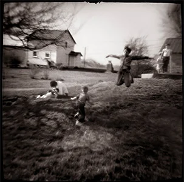
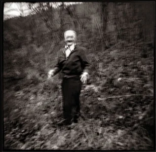
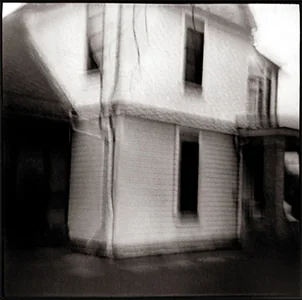
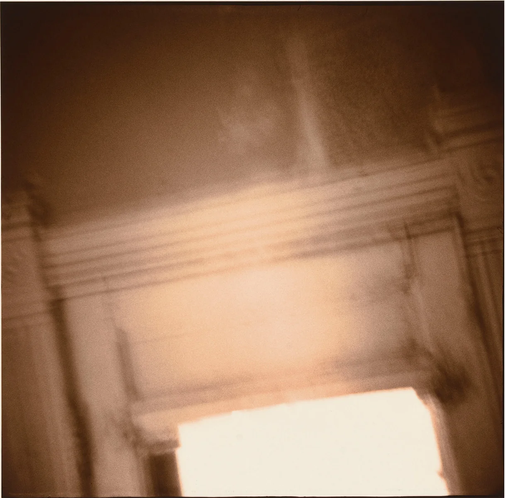
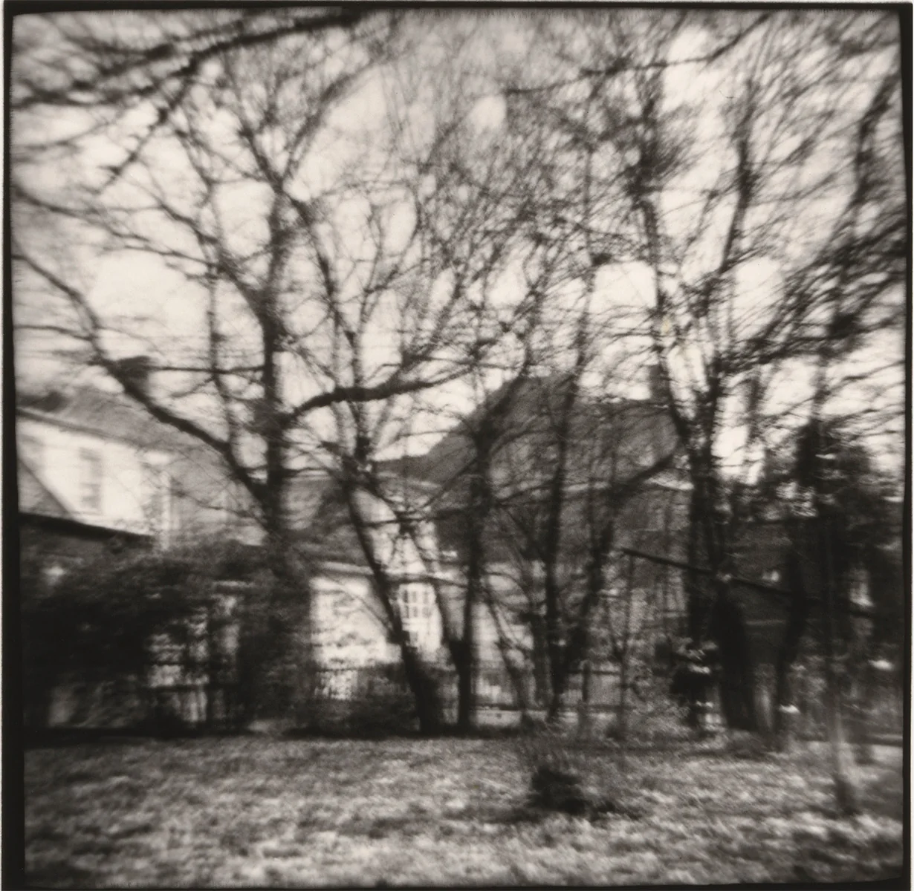
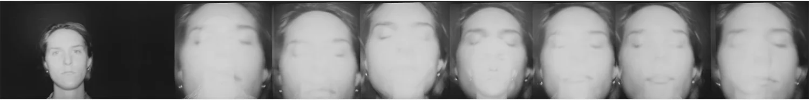
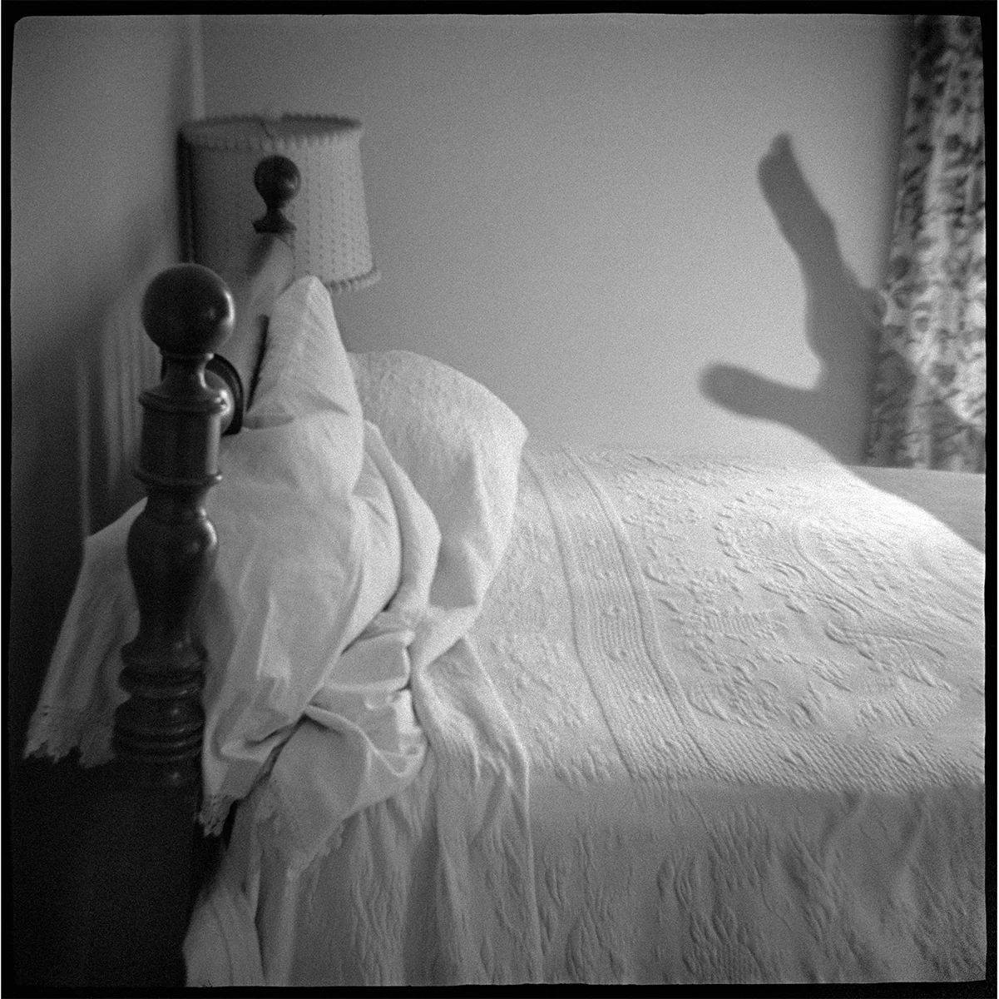

낸시 렉스로스(Nancy Rexroth)의 첫 회고전 《Secrets of My Power》가 10월 2일 미국 신시내티 미술관에서 열린다. 사진과 개인 물품, 작업 도구와 기록을 합쳐 150점이 넘는다. 대부분 거의 걸린 적이 없거나 처음 공개되는 것이다. 미술관은 이 전시로 그의 작업 《IOWA》의 50주년을 기린다.
《IOWA》는 다이애나 카메라로 찍은 사진집이다. 플라스틱 몸체에 플라스틱 렌즈 하나, 장난감으로 팔리던 카메라다. 사진은 흐리고 가장자리는 어둡다. 그래서 이 사진집은 오랫동안 토이 카메라 사진의 출발점처럼 소개됐다. 그런데 렉스로스가 남긴 말과 작업 기록을 읽으면 이야기가 달라진다. 흐림은 카메라가 알아서 만들어 준 것이 아니었다.
대학원생이 집어 든 장난감
렉스로스는 1946년에 태어나 버지니아주 알링턴에서 자랐다. 1969년 오하이오 대학교 대학원에서 강사가 뉴욕 차이나타운에서 사 온 다이애나를 처음 만졌다. 다이애나는 1960년대 홍콩의 한 플라스틱 공장에서 만든 카메라로, 120 롤필름에 한 변이 4센티미터쯤 되는 정사각형을 찍는다. 셔터는 순간과 벌브 두 가지뿐이고, 같은 모델이라도 한 대마다 초점과 빛샘이 제각각이었다.
렉스로스는 이 카메라의 결함이 반가웠을까? 2011년 사진가 블레이크 앤드루스와 나눈 인터뷰에서 그는 빛샘도, 부정확한 뷰파인더도, 시차도 반기지 않았다고 말했다. 이전에 쓰던 니콘 SLR처럼 찍히는 화면을 정확히 볼 수 없는 것이 불편했고, 구도는 여전히 중요했다. 그가 붙든 것은 그 카메라로 무엇을 할 수 있느냐였다. "It was not the camera but what could be done with it."

오하이오에서 찍은 아이오와
1970년부터 1976년까지 렉스로스는 오하이오 남동부의 작은 마을을 돌았다. 집과 아이들, 가족과 나무를 찍었다. 켄터키에서 찍은 사진도 몇 장 섞였다. 《IOWA》라는 제목과 달리 사진 대부분은 오하이오에서 나왔다.

제목은 어린 시절의 여름에서 왔다. 그는 친척을 만나러 아이오와에서 여름을 보내곤 했다. 그 기억은 나중에야 떠올랐다. 다섯 해쯤 찍고 나서 미국 국립예술기금(NEA) 지원서를 쓰려니 작업에 이름이 필요했고, 그때서야 사진들을 묶는 것이 어린 날의 아이오와라는 것을 알아차렸다고 한다. 그의 설명은 한 문장이다. "Iowa was a state of mind." 아이오와는 지명이라기보다 마음의 상태였다.
흐림에도 기준이 있었다
흐린 사진을 만드는 방법은 몇 가지였다. 카메라를 손에 든 채 몸을 움직여 번지게 했다. 벌브 셔터를 짧게 두세 번 눌러, 조금씩 어긋난 노출을 한 프레임에 겹치기도 했다. 1975년 켄터키 밴스버그에서 찍은 〈Waving House〉가 그렇게 만든 사진이다. 집 한 채가 손을 흔들듯 겹쳐 보인다.

그렇다고 흐린 컷을 다 쓰지는 않았다. 렉스로스는 흐림이 여러 층위에서 함께 작동해, 현실이 실제로 그렇게 보였다고 믿게 될 때만 그 네거티브를 골랐다. 그는 이 기준을 "The Integrity of the Blur"라고 불렀다. 흐림의 무결성이라는 뜻이다. 번졌다는 사실만으로는 모자랐다. 번진 채로 앞뒤가 맞아야 했다.
작은 필름으로 찍은 흐린 사진은 어디까지 키울 수 있을까? 렉스로스의 답은 작게 뽑는 것이었다. 인화는 대개 한 변이 4인치쯤 되는 정사각형이었고, 그 크기에서 형태가 버티지 못하면 더 줄였다. 흑백 한 장에 열 시간에서 열두 시간을 쓰기도 했다. 《IOWA》 셋째 부분의 실내 사진에는 황화 토닝 위에 금 토닝을 더해 분홍빛이 도는 은은한 광택을 얹었다. 이런 공정을 거친 사진을 두고 카메라가 부린 마법이라고 부르기는 어렵다.


1977년 초판과 2017년 개정판
《IOWA》는 1977년 렉스로스가 세운 바이올렛 프레스(Violet Press)에서 자비로 나왔다. 70점쯤을 한 쪽에 한 장씩, 4인치 안팎의 크기로 실었다. 마흔 해 뒤인 2017년에는 텍사스 대학교 출판부가 168쪽 하드커버 개정판을 냈다. 출판사 설명으로는 그동안 공개하지 않았던 사진 22점이 새로 들어갔다. 서문은 알렉 소스가, 에세이는 앤 윌크스 터커가 썼다.
다이애나 바깥의 렉스로스
이번 회고전에서 눈여겨볼 것은 아카이브다. 신시내티 미술관은 2017년부터 작가와 함께 작업을 정리해 2021년에 아카이브 인수를 마쳤다. 빈티지 프린트만 400점이 넘는다. 1977년판과 2017년판 《IOWA》의 다이애나 이미지가 거의 다 들어 있고, 공개하지 않았던 실험작도 있다.

다이애나 작업 옆에는 백금 인화, 폴라로이드 SX-70 전사, 검 바이크로메이트와 사이아노타입, 마운트하지 않은 필름 포지티브, 53장짜리 슬라이드 쇼가 함께 있다. 2000년대 초 저해상도 소비자용 디지털 카메라로 찍은 사진도 있다. 작가의 문서와 도구, 그가 모은 이름 없는 스냅사진은 따로 묶었다. 미술관이 정리한 목록만 봐도, 렉스로스를 토이 카메라 사진가라는 한 단어로 부르기는 좁다.

전시에 맞춰 연구 도록도 나온다. 큐레이터 너새니얼 M. 스타인이 엮었고 224쪽에 도판 164점이 들어간다. 10월 13일에 나올 예정이다.
필터의 시대에 다시 보는 《IOWA》
지금은 버튼 하나로 사진을 흐리게 하고 빛샘을 얹을 수 있다. 국내에서도 로모그래피의 다이애나 F+ 가 120 필름과 함께 팔린다. 다만 렉스로스가 쓴 것은 1960년대의 원래 다이애나로, 지금의 다이애나 F+ 와는 다른 제품이다.
필름의 실패와 우연을 좋아하는 것과, 그 우연을 자기 말로 길들이는 것은 어떻게 다를까? 《IOWA》는 그 차이를 보여 준다. 렉스로스는 흐린 컷을 골라내는 기준을 세워 두었고, 작은 인화 한 장에 하루의 절반을 들였다. 위의 사진들도 번진 자리 안쪽을 오래 보면 흐림이 어떻게 짜여 있는지 드러난다.
전시 정보
- 전시 Nancy Rexroth: Secrets of My Power
- 기간 2026년 10월 2일 ~ 2027년 1월 3일
- 장소 미국 오하이오주 신시내티 미술관(Cincinnati Art Museum)
- 입장 무료
- 회원 프리뷰 10월 1일 오후 5시 ~ 8시. 일반 공개는 10월 2일부터다.
- 도록 《Nancy Rexroth: Secrets of My Power》, Giles · 신시내티 미술관, 224쪽, 2026년 10월 13일 출간 예정
전시 소개와 공식 작품 이미지는 신시내티 미술관 전시 페이지에, 아카이브 구성은 The Nancy Rexroth Collection 페이지에 정리돼 있다. 이 전시는 10월 신시내티 일대에서 열리는 2026 포토포커스 비엔날레의 주요 전시이기도 하다.